人间公司
人间之首，曰诸司之邑。凡司一百五十四，居北京者二十六，深圳者二十，上海者十八。造人形者二十三，治世界模型者八，治 VLA 者六。融资可考者一百零八，皆注所出。


千寻智能
发布 Spirit 系列 VLA 与 Moz1 人形；v1.6 列 RoboArena 官方榜第一。

无界动力
发布 MWA 隐空间世界模型，MWA-WALA 在 RoboCasa GR1 TableTop 自报 75.2%。
智在无界
用人类视频训练机器人模型，发布 Being-0、Being-H0.7 与 Being-H0.8。

小米
开源跨域具身基座 MiMo-Embodied，另有 CyberOne 人形与 CyberDog 四足。
高德
发布 ABot 系列：ABot-M0 负责操作，ABot-N0 负责导航。
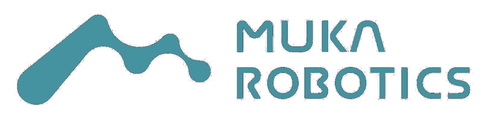
莫刻机器人
世界模型公司，模型 LJM 自报 WorldArena EWMScore_P 73.06，列第二。


宇树科技
杭州人形与四足机器人厂商，产品有 G1、H1、Go2、B2；2026 年 8 月科创板上市。


智元机器人
上海人形机器人公司，2023 年 2 月成立，产品有远征 A2、灵犀 X1，自研基座模型 GO-1。

银河通用
发布 Galbot G1、S1 与双足 ET1，模型为「银河星脑」；2024 年展出无人药房方案。


Physical Intelligence
发布 π0、π0.5、π0.7 系列 VLA 模型，并以 openpi 开源实现与权重。

NVIDIA
发布 GR00T 人形 VLA 与 Cosmos 世界模型，维护 Isaac Lab 仿真框架。

光轮智能
提供具身数据与仿真评测基础设施，团队在北京、上海。

Tesla
研发 Optimus 人形机器人，2026 年 10 月称弗里蒙特产线已开始早期生产。

Figure AI
发布 Figure 03 人形与 Helix VLA，自建 BotQ 工厂。
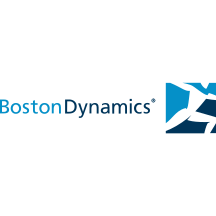
Boston Dynamics
发布 Spot、Stretch 与电动 Atlas，2021 年起由现代汽车集团控股。
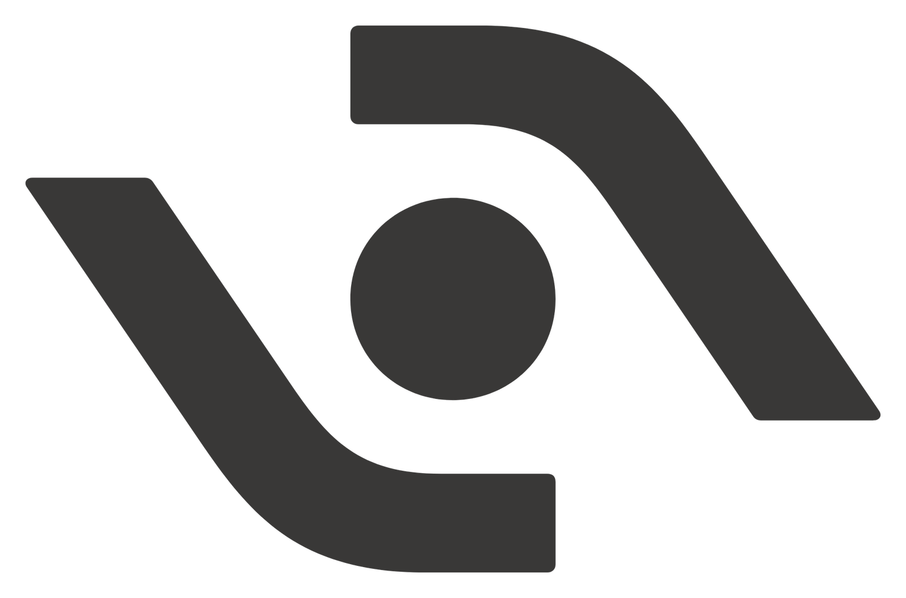
Agility Robotics
2026 年 11 月借 SPAC 登陆纳斯达克（AGLT），Digit 已在 GXO、舍弗勒、丰田工厂部署。


1X Technologies
挪威起家的人形机器人公司，产品从轮式 EVE 转向家用双足 NEO。

Apptronik
研发 Apollo 人形机器人，与 Google DeepMind 合作 Gemini Robotics。


Skild AI
研发跨本体基座模型 Skild Brain，称一套模型可控制不同机器人。

Generalist AI
发布 GEN-0 机器人基础模型，主张用单一模型覆盖多种任务。
Covariant
发布仓储操作基础模型 RFM-1，2024 年三位创始人随技术授权加入亚马逊。
Dexterity
发布物流操作机器人 DexR、Mech 与世界模型 Foresight。
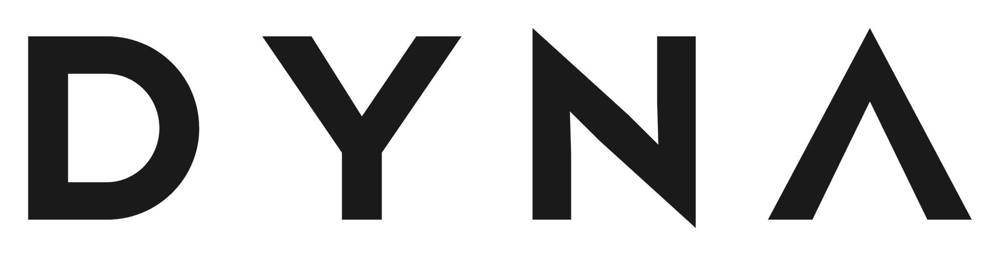
Dyna Robotics
研发 Dyna-1 机器人基座模型，用真实部署数据训练双臂精细操作。
NEURA Robotics
德国认知机器人公司，产品有 4NE1 人形、MAiRA 协作臂与 Neuraverse 技能平台。
Wayve
研发端到端自动驾驶系统 Wayve AI Driver 与生成式世界模型 GAIA。
World Labs
李飞飞创办的空间智能公司，首个产品 Marble 从图像、视频或文本生成可交互 3D 场景。
Agile Robots
慕尼黑机器人公司，产品有 Diana 机械臂、Agile Hand 灵巧手与 Agile ONE 人形。
优必选 UBTECH
深圳人形机器人厂商，2023 年 12 月港股上市，产品有 Walker S 系列与 Cruzr 服务机器人。


傅利叶智能
上海机器人公司，以康复机器人起家，2023 年起推出 GR 系列人形。
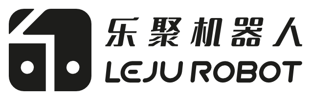
乐聚机器人
深圳人形机器人公司，产品有夸父 KUAVO 系列与 AELOS 教育机器人。
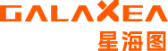
星海图
研发 R1 系列轮式双臂本体与 EFM-1 具身基础模型。
星动纪元
清华交叉信息研究院孵化，发布 STAR1 人形与 ERA-42 端到端模型。

自变量机器人
深圳具身模型公司，发布 WALL-A 操作基座模型与量子系列机器人。
智平方
发布 Alpha Bot 系列机器人与 GOVLA 模型，2024 年与北大合作发布 RoboMamba。

逐际动力
深圳足式与人形机器人公司，产品有 TRON 1、TRON 2、CL-1 与 Luna。
众擎机器人
深圳人形机器人公司，产品有 SA01、SE01、PM01 与 S2。

帕西尼感知科技
深圳触觉传感器与灵巧手公司，团队出自早稻田大学菅野实验室。
灵心巧手
北京灵巧手公司，产品有 Linker Hand 系列与 Open TeleDex 遥操作系统。

云深处科技
杭州四足机器人厂商，产品有绝影 X30、山猫 M20、绝影 Lite3，另研发人形。

加速进化
北京人形机器人公司，发布 Booster T1、K1，面向教育与科研场景。
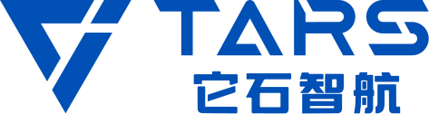
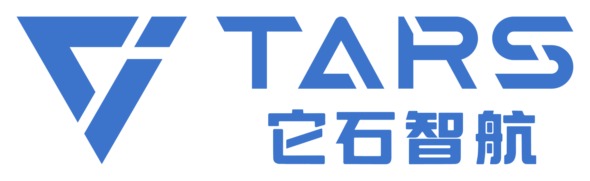
它石智航
上海具身模型公司，发布 AWE3.0 大模型、SenseHub 数据采集系统与 A1 机器人。
灵初智能
发布分层端到端 VLA 模型 Psi R1 与 PsiBot 机器人。


极佳视界
北京世界模型公司，发布 GigaWorld、GigaBrain 模型与 Maker H01 轮式人形。
北京人形机器人创新中心
北京经开区的人形机器人创新中心，发布天工开源人形与慧思开物平台。
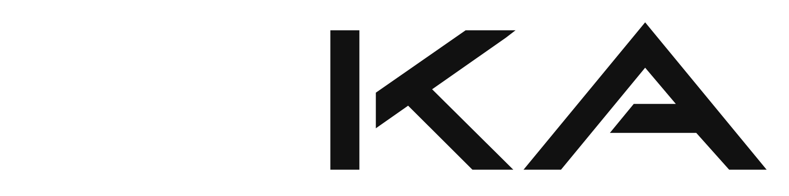

珞石
力控协作机器人厂商，产品为 xMate 系列与 NB 系列，2026 年 7 月 9 日港股主板上市。

上海非夕机器人科技有限公司
上海自适应机器人厂商，产品为 Rizon 系列力控机械臂。
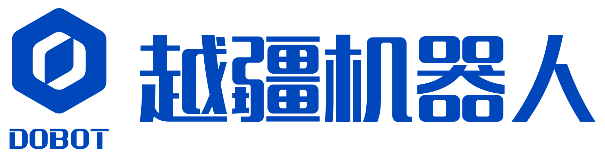
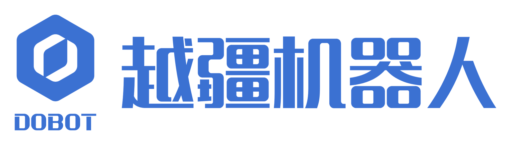
深圳市越疆科技股份有限公司
深圳协作机器人厂商，2024 年 12 月港股上市，2025 年发布全尺寸人形 Atom。
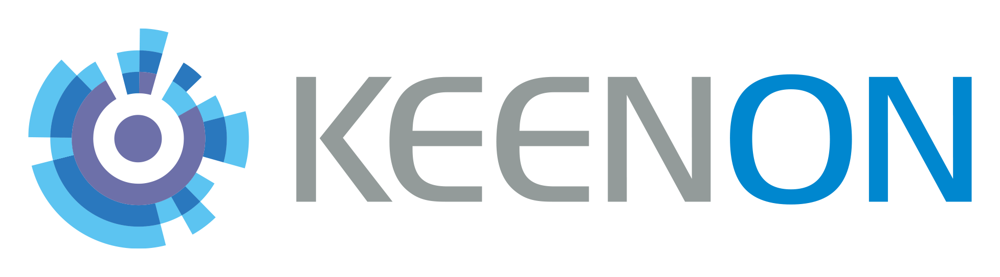
上海擎朗智能科技股份有限公司
上海服务机器人厂商，从餐厅配送扩展到清洁机器人与 XMAN 人形。
深圳市普渡科技股份有限公司
深圳商用服务机器人厂商，产品有欢乐送、T300 与类人形 PUDU D7。
杭州宇泛智能科技股份有限公司
杭州视觉 AI 公司，以人脸识别起家，2026 年发布四足机器人「灵猫」。
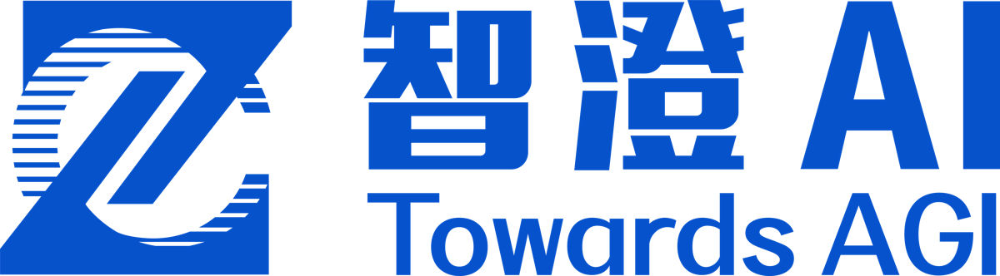
智澄英达
前华为美研 CTO 胡鲁辉创办，研发澄灵物理世界模型与 TR4 轮式人形。


北京原力灵机智能科技有限公司
旷视联合创始人唐文斌创办，开源 VLA 工具箱 Dexbotic，并运营 RoboChallenge。
深圳跨维智能科技有限公司
深圳机器人公司，以 DexVerse 仿真引擎与 3D 基础模型开发 Sim2Real 操作方案。
中科硅纪
中科院自动化所孵化的灵巧手公司，产品有 Casia Hand 系列与无畏、无际整机。

松延动力
北京小尺寸人形机器人公司，产品有 N2、E1 与仿生人脸 Hobbs。


上海卓益得机器人有限公司
上海理工大学李清都团队创办，研发完全仿生人形机器人 Moya 与行者二号。
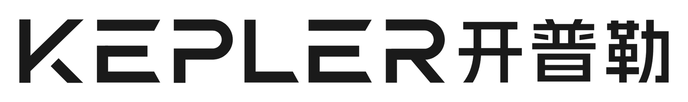
上海开普勒机器人有限公司
上海人形机器人公司，产品有先行者 K1 与 K2「大黄蜂」，2026 年 6 月起由杭州柯林控股。

华为
华为与深圳前海、宝安共建的具身智能平台，提供算力、盘古模型与工具链。
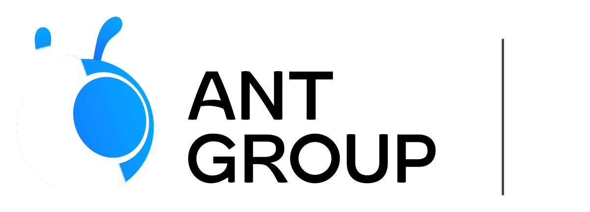
上海蚂蚁灵波科技有限公司
蚂蚁集团旗下具身智能公司，研发跨本体机器人大脑与自研机器人 R-1、R-2。
京东 Joyce / 京东探索研究院具身智能业务
京东的具身智能业务，推出 JoyInside 品牌，并投资智元、千寻、逐际动力等公司。
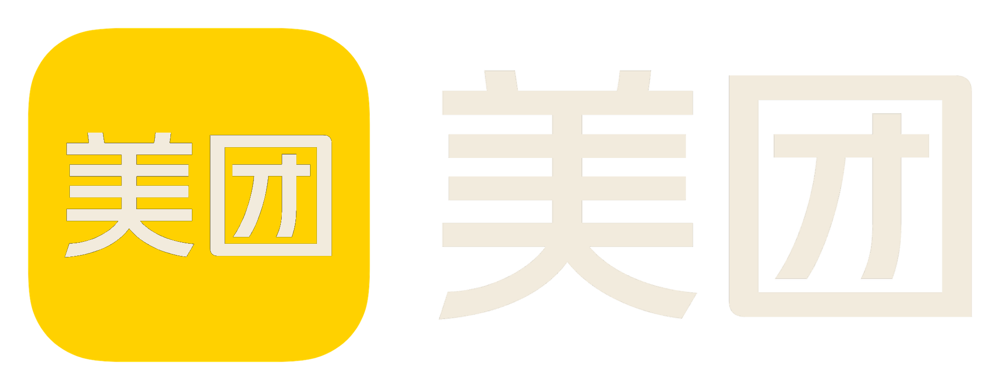
美团龙珠
美团旗下产业基金，领投星海图 A4、A5 轮与法奥机器人 C+ 轮。

Sanctuary AI (Sanctuary Cognitive Systems Corp.)
温哥华人形机器人公司，产品有 Phoenix 人形、Carbon 控制系统与液压灵巧手。
PAL Robotics
巴塞罗那机器人平台厂商，产品有 TIAGo 移动操作、TALOS 人形与 ARI 社交机器人。
Rainbow Robotics
KAIST HUBO 团队创办的韩国上市公司，产品有 RB 系列协作臂与轮式人形 RB-Y1。
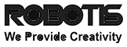
ROBOTIS
韩国 DYNAMIXEL 智能舵机厂商，维护 TurtleBot 3、OP3 等开源 ROS 平台。
Kawasaki Heavy Industries — Robot Division
川崎重工机器人部门，1969 年造出日本首台国产工业机器人 Kawasaki-Unimate 2000。
Honda R&D — Robotics (ASIMO program)
本田的人形机器人研发项目，1986 年 E0 起步，2000 年发布 ASIMO。
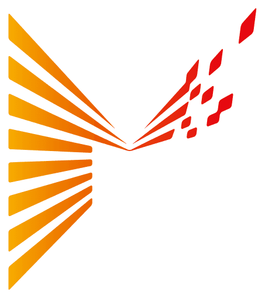
Mujin, Inc.
东京机器人软件公司，MujinOS 让工业臂与 AMR 免示教完成码垛、拣选与卸货。

Telexistence Inc. (TX)
东京机器人公司，补货机器人用于日本便利店，与 7-Eleven 日本开发 Astra 人形。
Preferred Networks (PFN)
东京深度学习公司，自研 MN-Core 芯片与超算，机器人业务拆分为 PF Robotics。
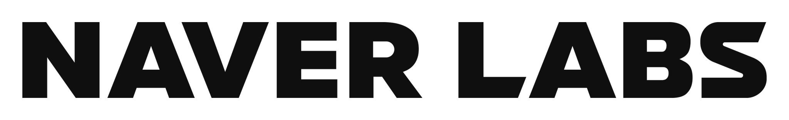
NAVER LABS
NAVER 的研究子公司，研究机器人、空间智能与数字孪生，代表硬件为线驱双臂 AMBIDEX。
Bear Robotics
服务机器人公司，Servi 系列用于餐厅送餐与回收，2025 年起由 LG 电子控股。

Serve Robotics
人行道配送机器人运营商，前身是 Postmates 机器人部门，2024 年在纳斯达克上市。
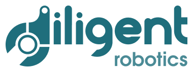

Diligent Robotics
奥斯汀医疗机器人公司，Moxi 在医院运送物资与样本，2026 年 1 月被 Serve Robotics 收购。


Nuro, Inc.
从无人配送转向授权 L4 自动驾驶系统 Nuro Driver，与 Uber、Lucid 合作 Robotaxi。
Aurora Innovation, Inc.
自动驾驶公司，Aurora Driver 先用于 8 级重卡干线货运。
Waabi
Raquel Urtasun 创办的自动驾驶卡车公司，用生成式仿真 Waabi World 验证驾驶系统。
Kodiak AI (Kodiak Robotics)
自动驾驶卡车公司，Kodiak Driver 用于干线货运与国防车辆，2025 年 9 月登陆纳斯达克。
OSARO Inc.
旧金山机器视觉公司，用 AI 软件驱动工业机器人完成电商仓拣选与配套打包。
Robust.AI
用认知引擎 Grace 结合传统机器人学与 AI，产品 Carter 为仓储协作搬运机器人。
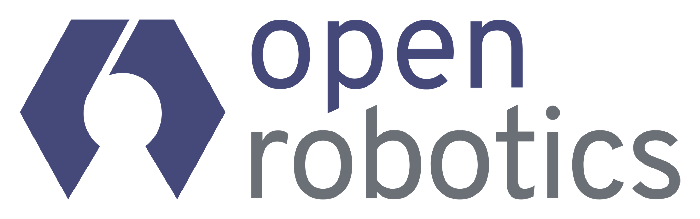
Open Robotics (OSRF)
美国非营利组织，维护 ROS、Gazebo 与 Open-RMF。
Intel RealSense
Intel 的立体深度相机产品线，D400 与 D500 系列用于机器人视觉与三维重建。
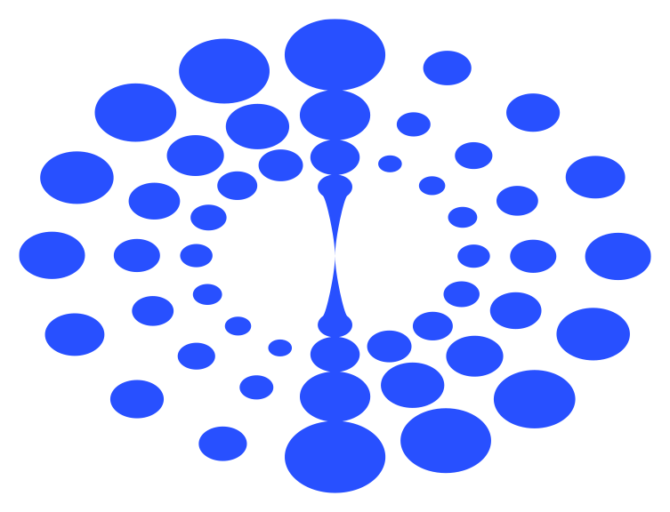
奥比中光
深圳的 3D 视觉厂商，Gemini 与 Femto 两条深度相机产品线，供机器人、扫描与消费设备。
Stereolabs
法国的立体视觉厂商，ZED 系列相机与配套 SDK 用于空间感知与机器人视觉。
影石 Insta360
深圳的全景与运动相机厂商，X、GO、Ace 等产品常用于采集第一视角与场景数据。
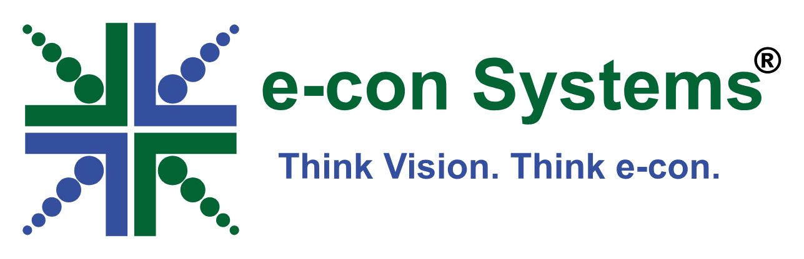
e-con Systems
印度的嵌入式相机模组厂商，为机器人、医疗与工业设备提供 USB 与 MIPI 相机。
览沃科技
大疆孵化的激光雷达厂商，Mid 与 Avia 系列以非重复扫描方式输出点云。
Ouster
美国的数字激光雷达厂商，OS 系列以数字架构输出高分辨率点云。
速腾聚创
深圳的激光雷达厂商，M 平台与 E 平台覆盖车载与机器人。
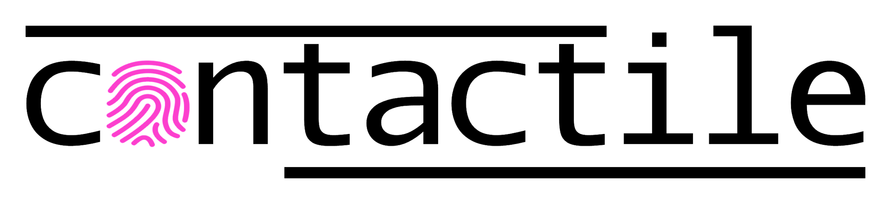
Contactile
澳大利亚的触觉传感器公司，GAL 系列以气压式柔性传感测量三维力。
Meta / GelSight
Meta FAIR 的视触觉传感器产品线，从开源的 DIGIT 到 DIGIT 360，GelSight 商业化。
Xsens
荷兰的运动捕捉与惯性传感厂商，MTi 系列 IMU 用于机器人状态估计与标定。
Bosch Sensortec
博世的 MEMS 传感器业务，BMI 系列 IMU 与加速度计广泛用于消费与机器人设备。
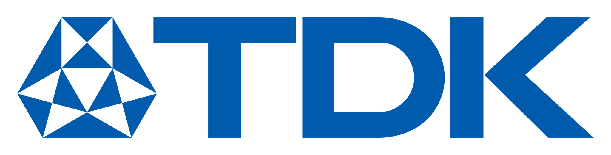
TDK InvenSense
TDK 旗下的 MEMS 惯性传感器业务，ICM 系列 IMU 用于姿态与运动测量。
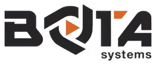
Bota Systems
瑞士的六轴力/力矩传感器厂商，ONE 系列用于协作机器人与力控研究。
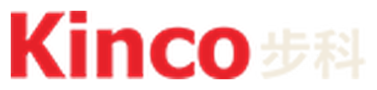
步科
上海步科的工业自动化与机器人部件业务；无框力矩电机与一体伺服驱动电机用于关节模组。
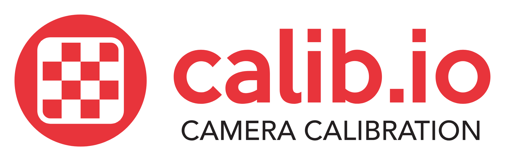
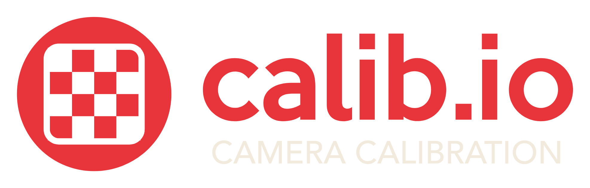
Calib.io
丹麦的相机标定板厂商，提供高精度标定板与标定服务。
Vicon
英国的光学动作捕捉厂商，用于机器人定位评估与多相机标定。
Qualisys
瑞典的光学动作捕捉厂商，Miqus 等相机用于运动捕捉与地面真值。
MANUS
荷兰的手部动作捕捉厂商，Metagloves 与 Quantum 系列用于手套式遥操作与数据采集。
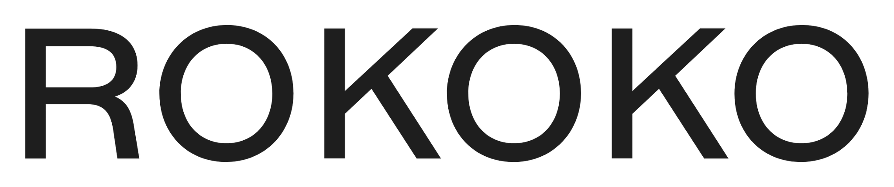

Rokoko
丹麦的动作捕捉公司，Smartsuit 系列用于人体动作采集与动画。
Khadas
深圳的边缘计算板卡厂商，Edge 与 VIM 系列基于瑞芯微 SoC。
海德汉
德国的测量与编码器厂商，旋转与直线编码器用于机床与精密运动。
矽递科技
深圳的开源硬件厂商，reComputer 系列基于 Jetson 模组，用于边缘 AI。
多摩川
日本的编码器与旋转变压器厂商，产品用于伺服电机与关节反馈。
Franka Robotics
德国慕尼黑公司，产品为七自由度力控臂 FR3 与双臂系统 FR3 Duo，开放 1 kHz 底层控制接口 FCI。
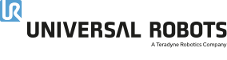
优傲机器人
丹麦欧登塞公司，2005 年成立；协作机器人分 e-Series、UR、g-Series 三族。
节卡机器人
上海节卡，协作机器人 Zu / S / AL / A / Mini 系列，另有 K 系列人形双臂。
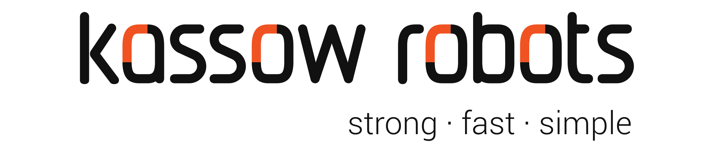
Kassow Robots
丹麦哥本哈根公司，2015 年创立，全系为七轴轻量协作臂 KR 系列，2022 年博世力士乐入股控股。
大象机器人
深圳大象机器人，产品从桌面六轴 myCobot 到十七自由度双臂 Mercury B1。
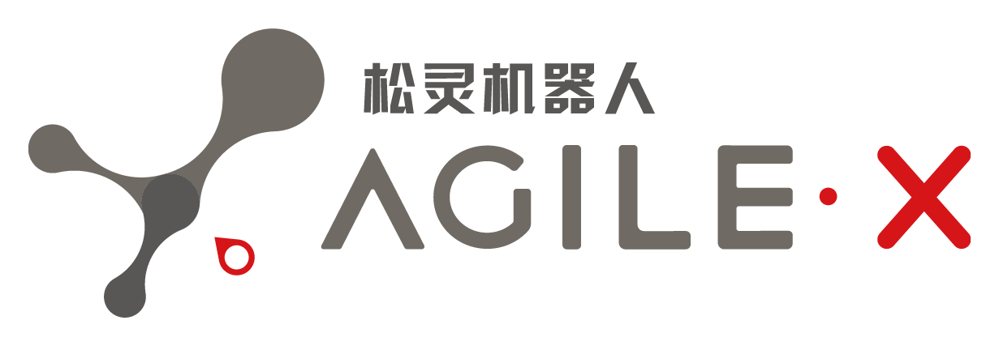
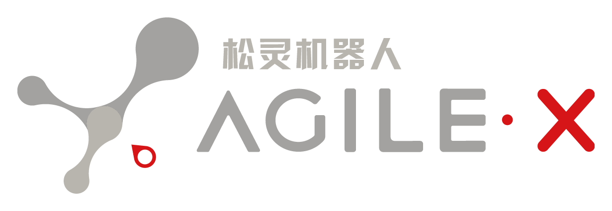
松灵机器人
深圳松灵，自研 PiPER 六轴臂与 NERO 七轴臂；双臂平台有 Cobot Magic 与 PiPER Dual。
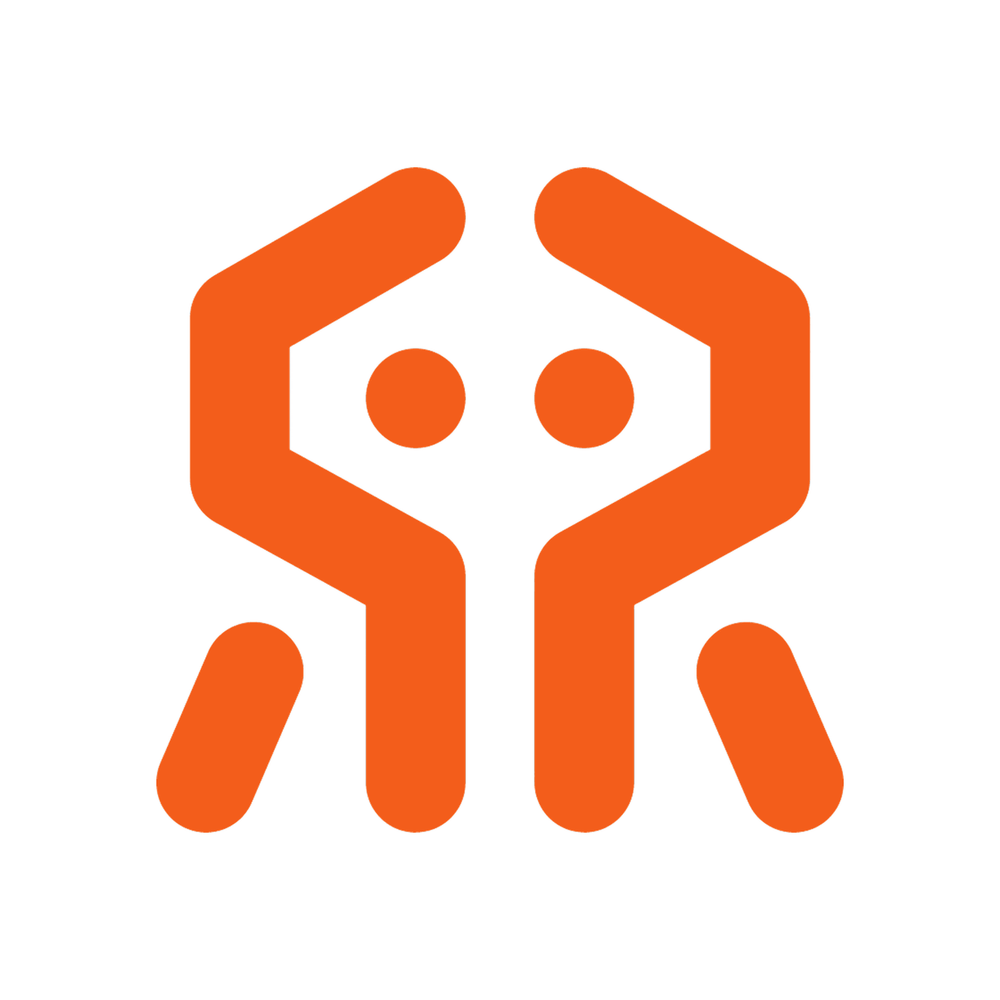
睿尔曼智能
北京睿尔曼，产品含 RM65/RM75 轻量臂、双臂升降平台与 RealBot 人形系列。
Trossen Robotics
美国 Trossen Robotics，ALOHA 开源双臂硬件的官方厂商，现出货 Trossen AI 系列。
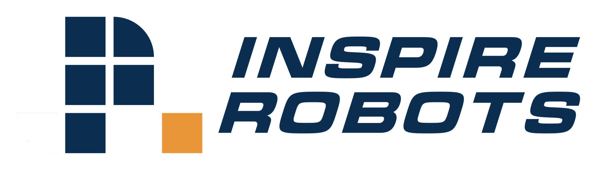
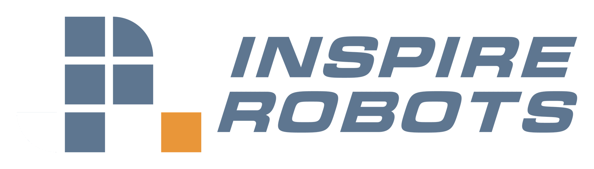
因时机器人
北京公司，做微型直线伺服执行器和五指尖仿人灵巧手 RH56 系列。
Shadow Robot
伦敦公司，22 年做腱驱五指灵巧手，配套遥操作手套和系统。
强脑科技
杭州脑机接口公司，Revo 系列仿生灵巧手用于人形与服务机器人。
傲意科技
上海张江公司，ROHAND 灵巧手与 OHAND 肌电仿生手同一套手部结构。
元益机器人（Allegro Hand）
韩国 Wonik Robotics 的 Allegro Hand 四指灵巧手，现出到 V6 系列。
StretchSense
新西兰柔性传感公司，Reality 手套用可拉伸传感器采手部动作与接触。
地瓜机器人
深圳地瓜机器人，做旭日系列芯片与 RDK 机器人开发者套件（X3/X5/S100/S600）。
AMD Kria
AMD（原 Xilinx）的自适应 SoM 产品线，K26 SOM 配 KV260 视觉 AI 入门套件。
LattePanda
上海 DFRobot 的单板机品牌，Sigma 2 配 Core Ultra X7 358H 与 64GB 内存。
瑞芯微
福州瑞芯微，RK3588 为八核 A76/A55 加 6 TOPS NPU 的通用 SoC，多用于机器人主板。
寒武纪
北京寒武纪，做云端与边缘 AI 芯片，MLU370 系列加速卡峰值 192 TOPS INT8。
图漾科技
南京图漾科技，做 ToF 与结构光 3D 工业相机，T 系列为 dToF 高帧率相机。
ATI 工业自动化
美国 ATI，做机器人末端六维力/力矩传感器与自动换枪盘，Gamma 为硅应变片 F/T 系列。
宇立仪器
常州宇立仪器，做六维力/力矩传感器、关节扭矩传感器与力控打磨系统。
Clearpath Robotics
加拿大移动机器人厂商，产品有 Husky、Jackal、Ridgeback，现属罗克韦尔自动化。
Robotnik
西班牙移动机器人厂商，做室内外 AMR 与移动操作平台，如 RB-SUMMIT。
Ghost Robotics
美国四足机器人厂商，主打 Vision 60 系列 Q-UGV，面向国防与工业巡检。
星尘智能
深圳公司，产品为轮式人形 Astribot S1，官网按「星尘智能 S1 / 普通成年男性」两列对比给参数。
北醒
北京北醒光子，做单点与线阵 ToF 测距雷达；TF 与 NOVA 系列用于机器人近场避障。
中科慧灵
北京公司（CASBOT），在售双足人形 02 与轮式 W1，官网产品页列核心参数与京东购买入口。
高仙机器人
上海商用清洁机器人厂商，2013 年成立，产品含奂影 S1、Scrubber 50/75 与 Beetle。
Hailo
以色列特拉维夫的边缘 AI 芯片公司，Hailo-8 为 26 TOPS 推理加速器。
禾赛科技
上海禾赛，车载与机器人激光雷达厂，ADAS 与机器两条产品线。
耐能
2015 年成立于美国圣地亚哥的边缘 AI 芯片公司，KL730 标 8 TOPS。
坤维科技
常州坤维传感，做六维力与关节扭矩传感器，2020 年推出 HRS 人形系列。
MAB Robotics
波兰公司，四足整机 Honey Badger 5.0 之外还做 MD 电机驱动器、MA 执行器等运动控制部件。
魔法原子
苏州公司，通用人形 MagicBot Gen1 / Z1 / X1，官网 Gen1 页给完整机械与电气参数表。
Milk-V
做 RISC-V 开源硬件板卡，Jupiter 是 Mini-ITX 规格八核 RISC-V 主板。
Mobile Industrial Robots
丹麦工业 AMR 厂商，2013 年成立于欧登塞，现属 Teradyne，载重覆盖 250 至 1350 kg。
Neobotix
德国移动平台厂商，2010 年从 GPS GmbH 机器人部门独立，做 MP/MPO 底盘与 ROX 全向平台。
诺亦腾
北京诺亦腾，做惯性动捕 Perception Neuron 系列与 Hi5 手套，另有子公司做具身数据采集。
OTTO Motors（罗克韦尔）
罗克韦尔旗下的工业 AMR 品牌，前身是 Clearpath 工业部门，载重 100 至 1500 kg。
Persona AI
美国公司，面向船厂、建筑与能源的模块化工业人形，官网人形页只讲设计与工况，不列数值参数。
Pollen Robotics
法国 Pollen Robotics（2025 年并入 Hugging Face）。
快仓智能
上海仓储机器人厂商，官网按 C/M/F 系列给出各型号负载、举升高度、导航方式与速度。

Reflex Robotics
美国公司，做轮式人形做仓库上架/取货，官网称本体可达超人的臂展、负载与续航，未公布数值。
SenseGlove
荷兰代尔夫特理工孵化，做力反馈与触觉手套，Nova 2 与 R1 两条线。
蔚蓝科技
南京蔚蓝智能科技，做 BabyAlpha 系列消费级四足与 Alpha Dog C 系列。
云迹科技
2014 年在北京成立的酒店服务机器人公司，2025 年 10 月在港交所上市，主推复合多态机器人 UP。


Anthropic
Claude 系列模型的开发方；Claude Fable 5.2 自报 RoboDojo 仿真成功率 64.9%。


OpenAI
GPT 系列模型的开发方；2026 年 11 月解散独立机器人团队，人员并入研究与产品部门。
此方向未收。